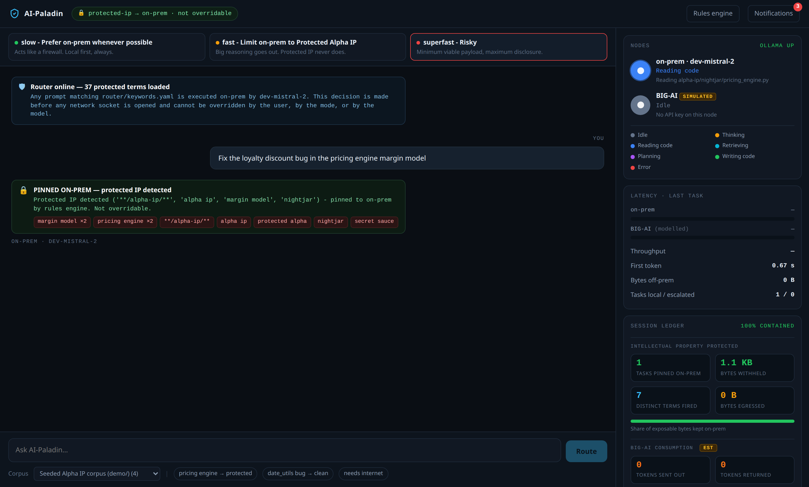
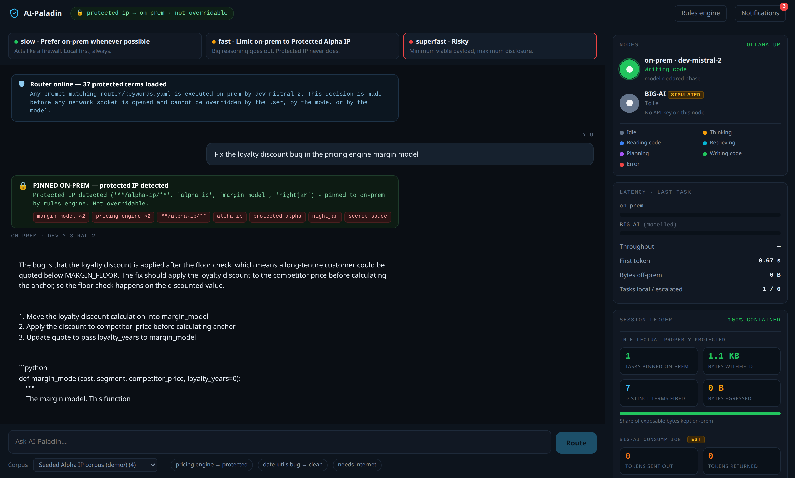
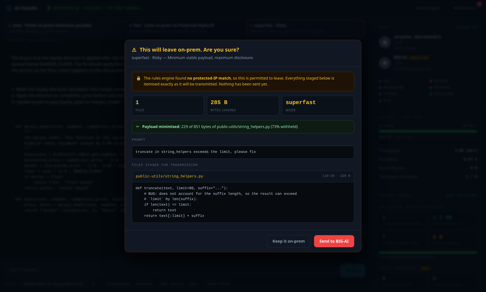
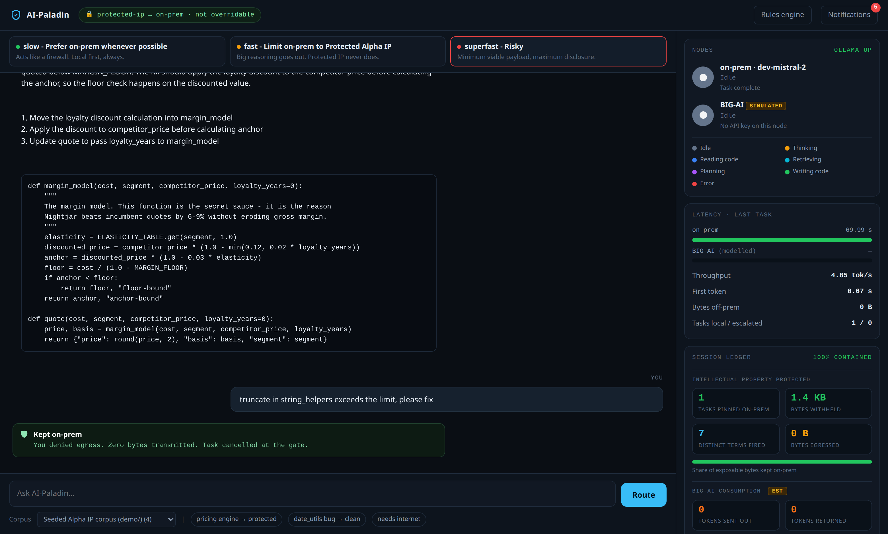
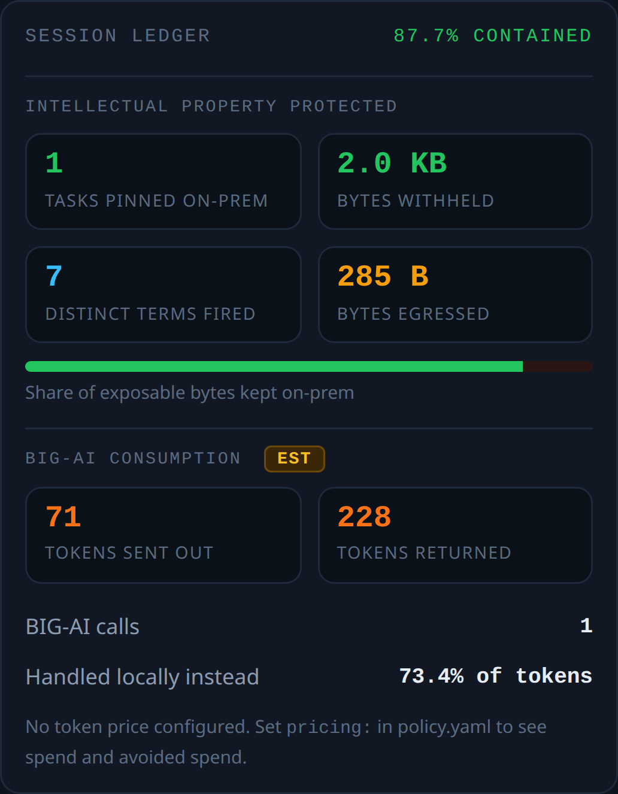
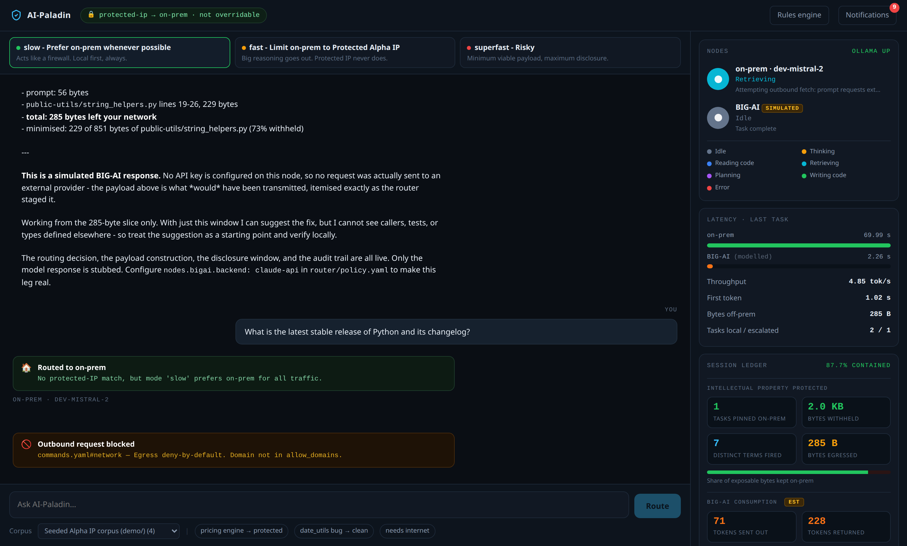
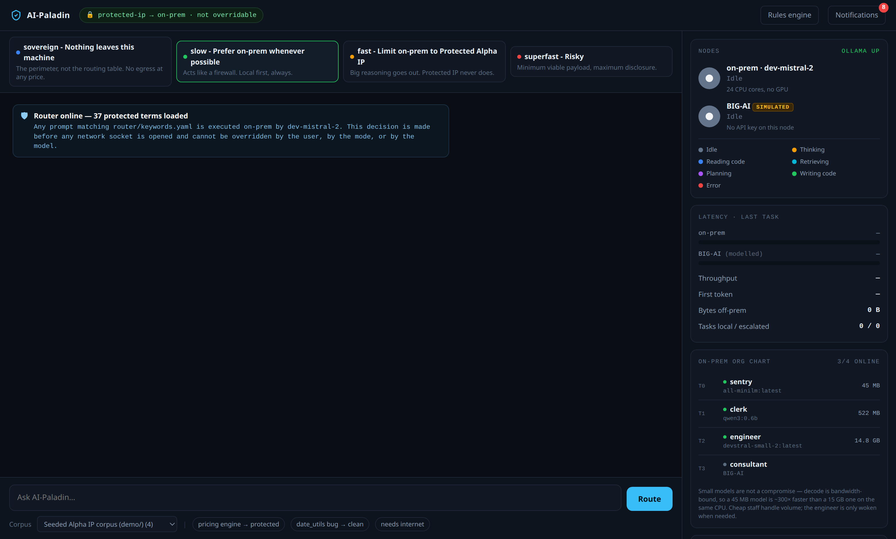
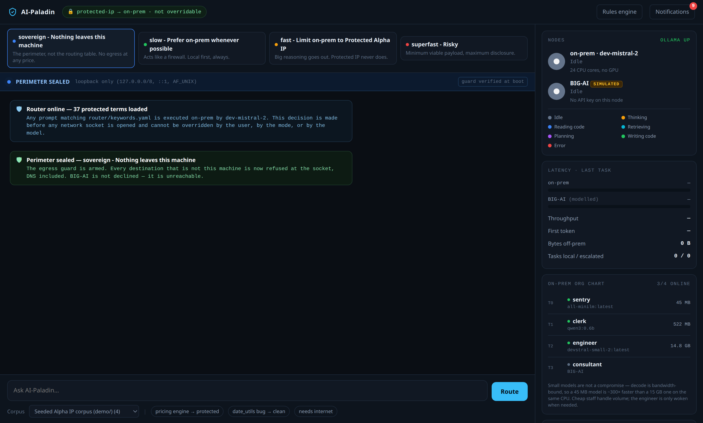
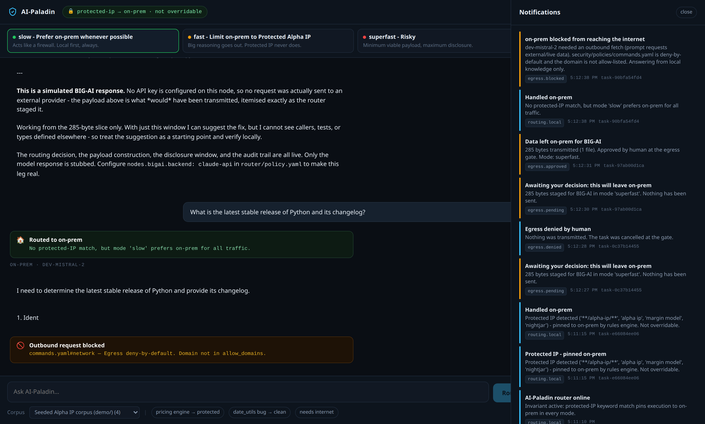

AI-Paladin decides where every prompt runs before a socket opens. Protected IP executes on hardware you own, where inference costs nothing per token. Everything else is your call, with full sight of exactly which bytes would leave.
A prompt is a suggestion. A hook is a wall. You already gate packets with a firewall and business logic with a rules engine — deterministic checks that run before the thing they guard, and that no amount of persuasion talks past. AI-Paladin is that same machine, pointed at the one input your perimeter does not currently inspect.
When an engineer pastes code into a hosted model, the routing decision has already happened — silently, by a human under deadline, with no record. The controls that exist are the weakest kind available:
A PDF nobody reads at 11pm. Unenforceable, unauditable, and invisible at the moment of the decision.
"Please don't share proprietary code." A suggestion. A manipulated or merely confused agent ignores it and nothing stops the request.
Ban the tools and you lose the productivity. Engineers route around it with personal accounts, and now you have no telemetry at all.
A contractual promise about data handling is not a technical control. It cannot be demonstrated to a regulator or an acquirer.
A manipulated or misbehaving agent can ignore "please don't send that." It cannot ignore a router that never opens the socket.
Every gate in AI-Paladin is deterministic and lives in version-controlled data — a YAML keyword file and a policy file — evaluated by code the model cannot reach, argue with, or talk its way past. The decision is made on the prompt, by the router, before any model is invoked.
This is the entire product thesis in one line. The routing modes below govern only what happens to traffic that does not match.
Steps 1–3 are pure computation over the prompt and the files it would carry. A protected task terminates at step 2 and never reaches a socket. Only work that clears the gate is ever staged, and staging is where the payload gets cut to the minimum.
| Mode | Protected IP | Everything else |
|---|---|---|
| sovereign Nothing leaves this machine |
🔒 on-prem · locked | Stays on-prem too — but not because a rule chose to. There is no reachable destination. The egress guard refuses every address that is not this machine, at the socket. |
| slow Prefer on-prem |
🔒 on-prem · locked | Stays on-prem too. Escalation is offered, never automatic. Acts like a firewall — the safest and slowest posture. |
| fast Limit on-prem to Alpha IP |
🔒 on-prem · locked | → BIG-AI — full context, human confirms. Large reasoning gets frontier capability; protected IP still cannot follow it out. |
| superfast Risky |
🔒 on-prem · locked | → BIG-AI — minimal slice only, with a full disclosure window itemising every byte before it moves. |
Read down the middle column. The most permissive posture we ship treats protected IP exactly as the most restrictive one does. That is not a default a user can drift away from — it is the one thing the control surface does not expose.
Then read the top row on its own. The other three postures are
routing decisions — they choose where work goes.
Sovereign is a perimeter: it does not decide where work
goes, it removes the capability to send it anywhere. In slow a
human decides not to send it. In sovereign there is nothing to
decide.
Mode is set to superfast — Risky, the most permissive
posture available. The prompt names the pricing engine. The router pins it
on-prem anyway and names every term that fired.

Seven states, derived from the real execution stream — not a progress spinner. File reads carry real paths and byte counts; the working phases are parsed from the model's own output as it produces them.

When work is cleared to leave, the human sees the payload before it
moves — file, line range, byte count, and the literal text. In
superfast the router first cuts the payload to the smallest
coherent slice: the one function that matters.

Declining at the gate cancels the task before transmission. The counter
stays at zero and the refusal is written to the audit topic
egress.denied with its task ID.
That record is the artifact a regulator, an auditor, or an acquirer's technical diligence team actually wants: not a policy asserting what should have happened, but a log of what did.

This matters more than any other number in the deck. The on-prem tier is currently doing every bit of that work on CPU alone — the integrated graphics sat idle throughout. That is the floor, not the ceiling.
AMD Ryzen AI 9 HX 370
12 cores / 24 threads
91 GB system RAM
GPU acceleration: none
Radeon 890M iGPU idle, 2 GB
4.94 tok/s generation
768 tok/s prompt intake
75.0 GB/s effective
~61 s per 300-token answer
median of 3 runs, ±0.01
dev-mistral-2
24B parameters, Q4_K_M
15.18 GB resident
100% in system RAM
60–90 seconds per answer, on commodity CPU, with the accelerator switched off. The next slide is what happens when it is not — and the answer is not the one most people expect.
Generating a token means reading every
weight once, so decode speed is set by memory bandwidth, not
core count: tokens/sec ≈ bandwidth ÷ model size.
If the model does not fit in VRAM, layers split between card and system RAM — and the system-RAM half never gets faster. That caps an 8 GB card at 1.8× even with an infinitely fast GPU; realistically it returns 1.3×.
Crossing the residency threshold takes the answer from 61 s to 11 s. One tier further reaches 6.5 s — conversational range, at which point the guarantee costs the user nothing in patience. A four-figure line item, not a research programme.
Projections are a published model, not a claim — assumptions and
arithmetic in bench/project.py.
Every organisation adopting AI asks the same two questions within a quarter: what are we spending outside, and what did we manage to keep inside. Both are counted from the first prompt — the interesting figure is cumulative, and you cannot backfill it.
Keeping 87.7% of exposable bytes on-prem
The other 12.3% is not leaked IP: it carried no protected match, and a human read it and approved it at the gate. Zero bytes of protected IP were transmitted.
2,033 B withheld — by the gate, by minimisation, and by human refusal
299 tokens — sent out and returned, counted separately
Hosted providers bill on what you send as well as what comes back, so the ledger tracks both directions.
73.4% of all tokens handled locally instead

Spend is computed from your contracted rate — we ship no vendor price list, because a stale one is worse than none. This is the slide that turns a security story into a budget story: the containment percentage is what a CISO signs off on, the local token share is what a CFO does.
Containment is not only about what the user sends. When the local agent needs live data, it hits an egress policy that is deny-by-default, the attempt is blocked and logged, and it answers from local knowledge — visibly stale rather than quietly connected.

The same application, one second apart. On the left the node is in
slow — the safest routing posture, where egress is
possible and a human is asked first. On the right the operator has selected
sovereign, and a blue bar has appeared that is not a status
message: it is the egress guard reporting that it is armed.


Two details worth pointing at. The invariant chip
in the header — protected-ip → on-prem · not
overridable — is identical in both frames: the rules
engine never depended on the posture. And the transition itself is an audit
record. Arming is logged; lifting is logged at critical severity,
because taking a perimeter down is the event an auditor will ask about.
Three of our four postures are routing rules — they choose where work
goes. sovereign is not a routing rule. While it is armed, every
destination that is not this machine is refused at the socket, before
the connect() syscall, DNS included — because resolving a name
is itself a packet leaving. BIG-AI is not declined. It is unreachable.
The router attempts a real outbound connection on every start and requires it to fail. If any check fails, the posture becomes unavailable — not unenforced. A perimeter you have not demonstrated is a label.
The fourth check is the one people miss: a guard that blocked everything would pass the first three while taking the local model offline with it.
Stage a payload in the riskiest mode, seal the node, then approve the egress anyway. The run is refused and the audit log records the refusal. No “N bytes transmitted” entry is written, because no bytes moved — a false record in an audit log is worse than a missing one.
Set lock_mode: sovereign in
policy and the posture is pinned: the mode bar greys out and the API
returns 409 to any other mode. A developer cannot click
— or curl — their way out of a posture their
organisation set.
This is a process-level guard, not a host firewall. It covers every socket the router opens; it does not cover the rest of the machine. It is fail-closed and demonstrable — it is not an air gap, and we will not call it one. The LAN-scoped ring that follows it (a second node, a pooled GPU box, still nothing to the internet) needs peer identity to be provable, and is roadmap.
Routing decisions, egress approvals, denials, and policy blocks are all published to named topics and persisted append-only. Nothing about the system’s behaviour has to be taken on faith.
egress.pending — awaiting a humanegress.approved — left, with byte count and file listegress.denied — human said noegress.blocked — rules engine said norouting.local — handled on-premagent.error — needs attention
A trade secret is the only IP right that is conditional on your own conduct. A patent survives your carelessness; a trade secret does not. Under the Defend Trade Secrets Act and the state UTSA regimes, information qualifies only while its owner takes reasonable measures to keep it secret. So the threshold question in a trade-secret case is rarely did they take it — it is what were you doing to protect it.
They join a competitor. Did they push the ranking algorithm through a hosted model first? Without a record: forensic sweep of every endpoint, months of expert time. With one: a query.
The buyer’s counsel asks what protected the code they are paying for. Without: attestations and hope, priced into the discount. With: an exportable evidence pack.
“Was our data sent to a third-party model?” Without: you cannot answer definitively, which is itself the finding. With: you answer per prompt.
The cheapest outcome is the one that never reaches counsel: an engineer who sees “this will leave on-prem — are you sure?” and clicks no. Deterrence at the moment of the decision costs nothing and leaves a record either way.
No seat licence. No metered inference. No kill switch. The appliance is capital expenditure — hardware and software you own outright, that keeps working exactly as well on day 3,000 as on day one, whether or not you ever pay us again.
That is not a pricing gimmick; it is the only pricing model consistent with the product. An IP-containment guarantee that stops when a subscription lapses was never a guarantee. Sovereignty you rent is not sovereignty.
Two subscriptions exist for customers who want them. Both are additive — they extend a working system, they never switch one on.
We are entirely candid with customers about this: dev-mistral-2 will be a dinosaur. Open models are superseded on a timescale of weeks, and runtime efficiency work — smarter weight residency, memory-layout and quantisation advances — keeps arriving from the big research labs. A bought-once appliance should not mean a frozen one.
Every Tier 2 upgrade returns a working appliance to us — fully functional, just no longer the top tier. Refurbished and re-certified, it becomes the entry-level product.
That is how a company with genuine IP but a modest budget — a two-person studio, a regional practice, a small manufacturer with one valuable process — gets the same containment guarantee as an enterprise, at a price set by depreciated hardware. The unit economics improve in both directions: the upgrade is part-funded by the trade-in, and the returned unit opens a segment the new-hardware price could never reach.
One product line becomes two customer classes — enterprise leading edge and small-business entry — served from the same engineering, the same router, the same rules engine.
Refurbished stock has already paid for itself once. A competitor selling only new hardware cannot reach the entry segment profitably, nor match the upgrade price without a take-back channel.
Accelerators are among the most carbon-intensive hardware a company buys. Keeping a card in productive service for a second full life is a real reduction, not an offset purchased after the fact.
Decode speed is set by memory bandwidth, so
tok/s ≈ bandwidth ÷ model size cuts both ways: if a
15 GB model is slow on a given machine, a 45 MB model on that same
machine is hundreds of times faster. That is not a
compromise — it is an org chart.
| Tier | Role | Model | Measured | Job |
|---|---|---|---|---|
| 0 | sentry | 45 MB embedder | 50 ms | Semantic gate. Runs on every prompt. |
| 1 | clerk | 0.6B instruct | 197 ms · 124 tok/s | Triage and classification. |
| 2 | engineer | 24B dev-mistral-2 | 61 s · 4.94 tok/s | Reads, plans, writes code. Woken only when needed. |
| 3 | consultant | BIG-AI | only if permitted | The outside specialist. Gated, disclosed, logged. |
The 45 MB sentry catches what exact matching misses — “our proprietary price calculation logic” for “pricing engine”. A deterministic near-miss check catches the other evasion, “pricng engnie”. Measured: 5/5 evasions caught, 0 false positives across 15 clean prompts.
Both layers are additive only. They can raise a match the deterministic gate missed; neither can clear one, and no model is ever consulted about whether something may leave. If a model is offline or slow, the gate stands alone — stricter, never looser.
A demo that overstates itself does not survive diligence. Here is exactly what runs and what does not.
sovereign posture and its socket-level egress
guard — including the boot self-test that proves it blocks,
and the operator pin that holds itSIMULATED on screen and its latency is
labelled (modelled) — we do not pass it off as measuredEverything that constitutes the product — the decision, the gate, the disclosure, the record — is running. What is stubbed is the part any vendor can supply.
One scope note we volunteer rather than wait to be asked: the egress guard is process-level. It covers every socket the router opens and it fails closed, but it is not a host firewall and it is not an air gap. The LAN-scoped perimeter — a second on-prem node, a pooled GPU box, still nothing to the internet — is on the roadmap, not in the box.
A persistent, branch-aware index of the repository — production and development held separately — shared by every agent and node. It answers what a context window cannot: is this bug in what shipped, or only on dev? was this refactor already tried and reverted?
It reuses the embedder that is already resident: 45 MB, 18 ms, on CPU. Indexing is an offline batch job against a model already paid for.
BIG-AI is permitted to see a 285-byte slice. The on-prem tier is permitted to see the entire repository and its history. On the axis that decides answer quality on a mature codebase — context — local is not the compromise. It is the only tier that can ever be well informed, and that gap widens every day the system runs.
Write the fix, run the tests, read the failure, correct it, stop when green or when the budget is spent — instead of answering once and hoping.
A naive loop on a 24B model at 4.94 tok/s is unusable. The org chart is what makes it affordable: the loop controller, the failure summariser, and the per-turn gate re-check all run on millisecond models. The 24B is woken only for the steps that actually generate code.
A loop multiplies gate decisions by its iteration count. It is only safe because the gate is already deterministic and costs 18 ms — so classification re-runs on every turn, over the full accumulated context. Content rejected on turn one must not leak on turn six in different wording.
Memory first, loops second: a loop without memory repeats its mistakes across
tasks, while memory improves every single-shot answer on its own. Full design
notes in docs/ROADMAP.md — deliberately unbuilt, so today’s
architecture does not foreclose it.
Asked whether a team should give every developer a node or pool $100k–$300k of GPUs on-prem, the answer is both — and the tiers decide which goes where, because they have opposite hardware profiles.
The sentry (45 MB) and clerk (0.6B) run on every developer machine. No GPU, millisecond answers, near-zero marginal cost per head. The security decision is made before anything leaves that machine — including before it crosses your own LAN. The perimeter scales to 500 desks for free.
The 24B tier lives in the micro datacentre, batched across the team: one weight read serves every concurrent request — the one thing a single-user node can never do. A developer uses under 6% of a GPU-day, so meshing horsepower buys 100% of the hardware to use 6% of it.
A pooled cluster is a shared multi-tenant system — a compromise there exposes many developers’ work at once, not one person’s. That is precisely why the gate stays meshed even when compute centralises: the cluster is a compute resource, not a trust boundary. Nothing reaches it that a local, deterministic gate has not already cleared.
Mesh capex is flat per head — every desk buys the same box. Pooled capex declines per head, because each card amortises across more people. Below ~14 developers you cannot fill a cluster and mesh is cheaper; above it, pooling wins and the gap widens without limit.
Everything above turns on developers served per pooled GPU — we model 15–25, from a ~6% duty cycle plus headroom for correlated peaks. At the favourable end, 500 seats fit inside the $100k–$300k envelope. At the unfavourable end the same 500 seats cost $714k, about 2.4× the ceiling. We are not going to pretend that spread away: it is one measurement on a pilot, and it should be the first thing any deployment takes.
The first question a regulated buyer asks after “where does my code run” is “what happens when that building burns down”. Sovereignty and continuity are the same conversation, and an appliance that answers only the first half will not clear diligence.
15-minute RPO — maximum tolerable data loss, not a backup schedule. What replicates: the codebase memory, the audit trail, the rules files, and the model versions that produced the logged decisions.
Rules restore first. Recovery order is deliberate — rules, then audit, then memory, then compute. A node that comes back before its gate does is a node with no perimeter.
Replication is egress. It would be incoherent to gate a 285-byte snippet and wave through a full repository copy. Replication is encrypted, private, logged to the same audit topics, and sent only to declared destinations — an undeclared target is treated as exfiltration.
It is also the other half of the ransomware control: detection without recovery is not a control. The reason an operator can refuse to pay is a clean, immutable copy in another state.
Our founder ran continuity and recovery operations of exactly this shape for many years at Euler Hermes, a global trade-credit insurer — where tolerance for lost financial records is measured in minutes and the recovery plan is audited, not assumed. Not a feature we read about; the discipline the company was built by.
The customer picture is not one machine. It is a developer workstation, a second node on the same LAN, and a pooled GPU box in the micro datacentre. All of those are inside the building. BIG-AI is not. The real boundary was never the host — it is the external firewall.
Today sovereign collapses that to loopback, because a
one-machine perimeter is the only one we can enforce and prove right
now. Widening the ring is one function — but it is the four things
around it that make it a perimeter rather than an allowlist:
10.0.0.0/8 is not a security boundary.
10.20.4.7:11434, the GPU pool is. Anything not named is
refused exactly as api.anthropic.com is today.
An IP allowlist authorises whoever holds the IP. mTLS between nodes is what makes “the pooled GPU box” mean the box. This is the reason the wider ring is a design note and not a config change.
Code crossing your own LAN to reach a shared multi-tenant cluster is protected material on a network. Same discipline as any other egress: encrypted, logged to the same topics, declared destinations only.
The router is meshed even when the compute centralises. Widening the ring must not move the decision point outward with it — nothing reaches the cluster a local gate has not already cleared.
We are shipping the tight ring first on purpose. Shipping the wide one first would mean shipping an IP allowlist and calling it a perimeter — which is the exact move this company exists to argue against.
must_contain, cannot_contain, any,
all, and, or, not —
composable policy instead of a flat keyword list.
A one-character misspelling should not defeat the gate.
nightjr and pricng engine score close enough to
trip it — and the near-miss itself becomes an evasion signal worth
alerting on.
Route across a fleet by role and load, not a single box. The node and task contracts for this are already defined.
Detection rules over the agent event stream — mass file writes, credential-path access, fence-probing — with kill-and-alert.
Tokens and spend, local versus escalated, dollars saved against an all-cloud baseline, and security posture over time.
The audit trail already exists. Turn it into the evidence pack an auditor or an acquirer asks for.
Frontier models get cheaper and more available every quarter. The thing that stays scarce is the ability to prove where your most valuable code went, and to hand that proof to someone who is not obliged to trust you.
Every organisation with real IP is being forced to choose between velocity and containment. AI-Paladin's position is that this is a false choice created by an absent control layer — and that the control layer belongs in the routing decision, not in a policy document.
Enforced in code, before the socket. Defined in version-controlled YAML your security team owns — not in a prompt the model is free to reinterpret.